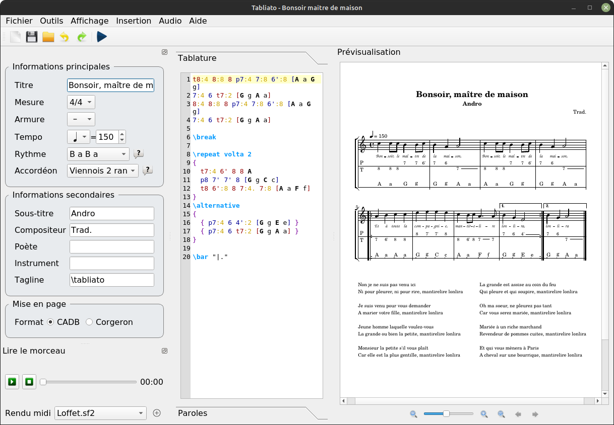

Tabliato repose sur le logiciel libre Lilypond. Cependant Lilypond ne peut pas faire de tablature d'accordéon nativement. Tabliato permet de contruire un fichier lilypond complexe et spécifique à l'accordéon diatonique et ensuite Lilypond se charge de produire un résultat visuel. Ainsi l'essentiel de la syntaxe musicale de Lilypond reste valable dans Tabliato. Ce manuel décrit la syntaxe spécifique de Tabliato et les bases utiles de Lilypond.

Tout est géré par Tabliato dans l'interface graphique. Indiquez grâce aux listes déroulantes les options de votre partition. Une liste déroulante est paticulièrement importante: le rythme. Cette information permet de générer automatiquement la plupart des informations d'accompagment sans avoir à les écrires explicitements. C'est ce que nous verrons dans les prochaines sections.
Pour écrire une note il faut écrire son numéro suivi d'une apostrophe « ' » si c'est un bouton de la seconde rangée.
Pour indiquer si cette note est poussée ou tirée on ajoute un « p » ou un « t » devant la note. Exemple :
p5'
Il n'est pas nécessaire de le répéter à chaque fois. Tant qu'on joue dans le même sens la lettre s'applique aux autres notes. Exemple :
t7 8 7' 9 9 p6 7 6' 8 8
La syntaxe est très libre: minuscule, majuscule avec ou sans espace. Tabliato détecte un 'p' ou un 't' et comprend que tout ce qui suit est poussé ou tiré.
Enfin il faut spécifier la durée de la note: ronde, blanche, noire, croche, etc. Dans lilypond une ronde est notée 1, une blanche 2, une noire 4, une croche 8, etc. Dans tabliato, comme les chiffres sont déjà utilisés pour nommer les boutons il faut ajouter le symbole « : » suivi de la valeur pour ne pas que la durée soit interprétée comme une note. De même il n'est pas besoin de répéter cette valeur tant qu'elle ne change pas. Exemple :
t7:4 8 7' 9:2 9:4 p6 7 6' 8:2 8:4
Pour les notes pointées, il suffit d'ajouter un point à la valeur du temps. Exemple :
p5':4.
Il y a 3 façons d'écrire l'accompagnement de la main gauche. La syntaxe automatique, semi-automatique et manuelle.
La syntaxe automatique est la plus simple il suffit d'écrire, pour chaque mesure, la lettre des accords (nomenclature anglaise couramment utilisée en accordéon) et tabliato interprète automatiquement en fonction du motif rythmique de la pièce. Exemple :
t7:4 8 7' A 9:2 9:4 A p6 7 6' G 8:2 8:4 G

La syntaxe automatique est très pratique puisqu'elle permet de n'écrire qu'une seule lettre et interprète automatiquement la correspondance rythmique. Cependant cette syntaxe est limitée et ne permet pas d'avoir des accords différents dans une même mesure. Dans ce cas la syntaxe semi-automatique permet un plus grande flexibilité. Exemple :
t7:4 8 7' [A a f] 9:2 9:4 A p6 7 6' [G g e] 8:2 8:4 G

La syntaxe semi-automatique, dans de rares cas, ne suffit pas. Dans ce cas la syntaxe manuelle permet une liberté totale sans contrainte de motif. Exemple :
t7:4 8 7' [A:2 a:4] 9:2 9:4 [A:8 a:8 a:8 A:8 a:4] p6 7 6' G 8:2 8:4 [G:4 r2]

Les silences s'écrivent « r » suivi de la durée, notifiée sur le même principe que les notes.
t7:4 8 r A 9:2 9:4 A p6 r:2 G 8:2 8:4 G

Il s'agit d'un cas particulier où il n'est pas nécessaire d'écrire la durée avec « : ». Cependant la syntaxe suivante est tout aussi correcte :
r:1 r:2 r:4 r:8 r:16 r:32 r:64 r:128
Les répétitions s'indiquent avec le mot clé « \repeat volta » suivi du nombre de répétitions :
\repeat volta 2
{
t7:4 8 7' A
9:2 9:4 A
p6 7 6' G
8:2 8:4 G
}

Une fin alternative s'écrit comme suit : on indique qu'il va y avoir une répétition puis on omet la dernière mesure que l'on place dans \alternative. S'il y a trois répétitions on peut bien sûr mettre trois alternatives.
\repeat volta 2
{
t7:4 8 7' A
9:2 9:4 A
p6 7 6' G
}
\alternative
{
{ p8:2 8:4 G }
{ 8:2 t7:4 G }
}

Si la mise en page automatique ne vous convient pas, vous pouvez forcer un retour à la ligne en ajoutant le mot \break. Dans ce cas la ligne va occuper toute la place disponible même si elle est courte :
t7:4 8 7' A 9:2 9:4 A \break p6 7 6' G p8:2 8:4 G

Le mesures incomplètes s'annoncent avec le mot clé « \partial » suivi du nombre de temps. Les accords doivent alors être en syntaxe manuelle car la mesure est incomplète :
\partial 2*8 p7:8 7:8 [A:4] t7:4 8 7' A 9:2 9:4 A p6 7 6' G p8:2 8:4 G
Les liaisons de prolongation s'écrivent avec un « ~ » :
t7:4 8 7' A 9:2 ~ 9:4 A p6 7 6' G p8:2 8:4 G

Les liaisons d'articulation et de phrasé s'écrivent avec des parenthèses :
t7:4 8 7' A ( 9:2 ) 9:4 A p6 7 ( 6' ) G p8:2 8:4 G

\motif [B:4. a:4 a:4] t8:8 6' 7 8 6' 7 6':16 8 A 7':4 7:8 7':4 7' D 7':8 9 8' 9 7' 8 7' G p7':4 t8':8 p7':4 7' C

Tout ce que le logiciel lilypond sait faire tabliato doit svoir le faire aussi car sous le capos c'est lilypond qui génère le rendu. Je ne l'ai personnellement jamais utilisé ni vu utilisé sur des tablatures d'accordéon diatonique qui sont en général des partitions très simples. Pour écrire des choses plus complexes veuillez vous référer à la documentation de Lilypond. Par exemple nous pouvons controler les associations de notes.
\motif [B:4. a:4 a:4] t8:8 6' 7 8 6' 7 6':16 8 A 7':4 7:8 7':4 7' D 7':8 9 8' 9 7' 8 7' G p7':4 t8':8 p7':4 7' C

\motif [B:4. a:4 a:4] \set Timing.beatStructure=3,3,2 t8:8 6' 7 8 6' 7 6':16 8 A 7':4 7:8 7':4 7' D 7':8 9 8' 9 7' 8 7' G p7':4 t8':8 p7':4 7' C